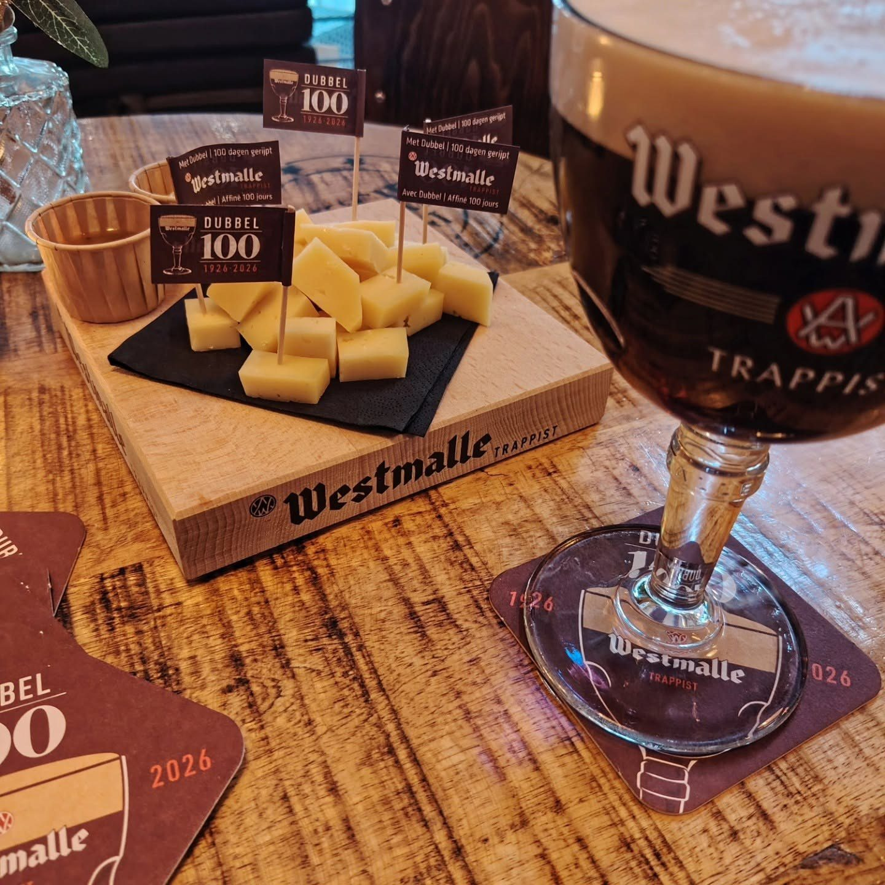
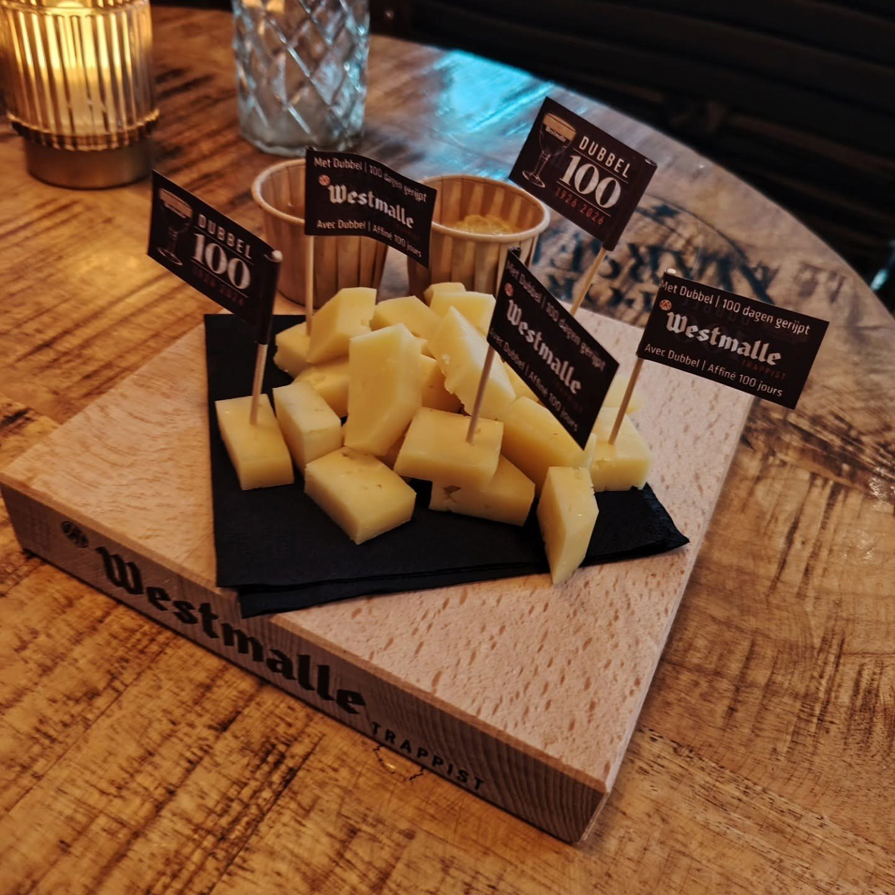
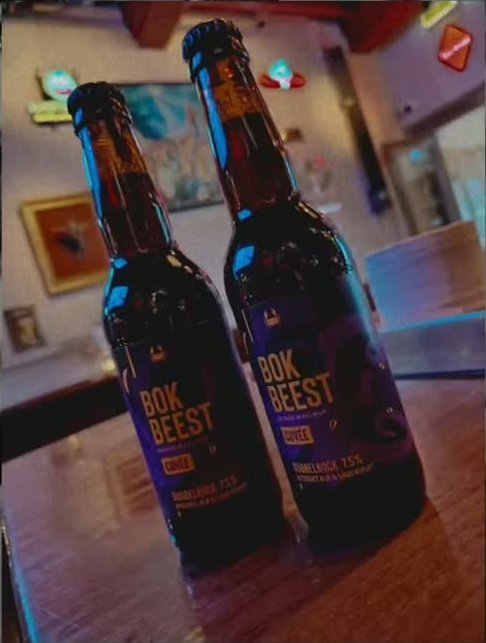

Onze bieren
Speciaalbier van de tap, een wisseltap die steeds iets nieuws schenkt en bier van het seizoen.
Van de tap en de fles
Een greep uit wat we de laatste tijd schenken. Op de wisseltap komt steeds iets anders, dus vraag gerust wat er nu op staat.
Fourchette Tripel
Wisseltap · 7,5%Blond Belgisch tripelbier van Brouwerij Van Steenberge, met een aroma van bloemen en fruit.
Brugse Bok
Op fust · bokseizoenHiermee trappen we het bokseizoen af.
Bokbeest cuvée
Op de fles · beperkte oplageEen extra jaartje gerijpt. Op = op.
Affligem Blond
Op fustHet vertrouwde blond van de tap.
Westmalle Dubbel
TrappistLekker met een plankje blokjes kaas erbij.
Gouden Carolus Classic 0.0
AlcoholvrijDonker robijnrood alcoholvrij bier met een stevige body en tonen van zachte karamel.

Bier met een hapje
Bij een goed glas hoort iets lekkers, zoals een Westmalle Dubbel met een plankje blokjes kaas.
Met mooi weer zit je op het terras op de Grote Markt. Speciaal voor het IBoZA-weekend schonken we de Pacha Spritz, een ijskoude kersen-spritz.

Het bokseizoen
In het najaar gaat de bok op fust. We doen ook mee aan de Bergse Bokkentocht, waar we Bokbeest schenken.
Wat er nieuw op de tap komt, zetten we altijd op Facebook.
Volg ons op FacebookKom langs
Een vraag of met een groep langskomen? Stuur ons een appje of bel even.
Kunst- en Proeflokaal De Wereld
Grote Markt 28, midden in Bergen op Zoom.